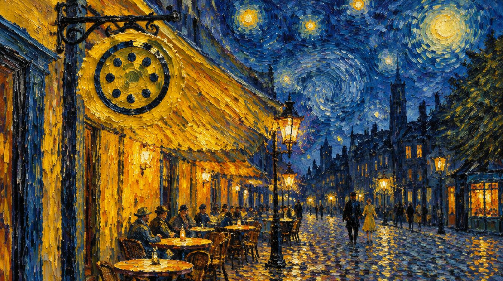
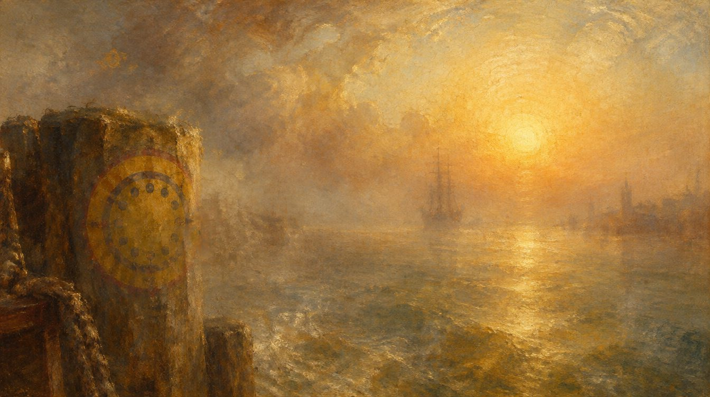
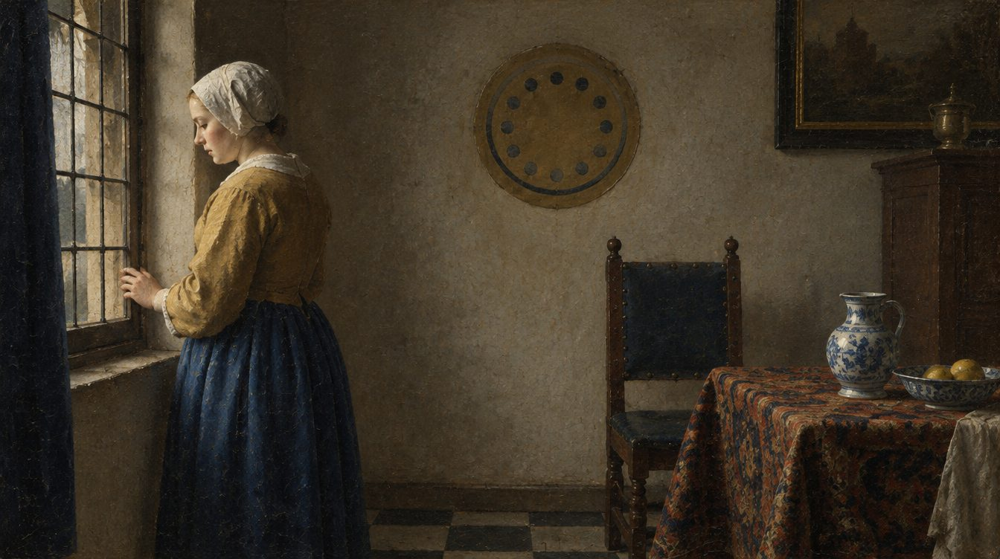
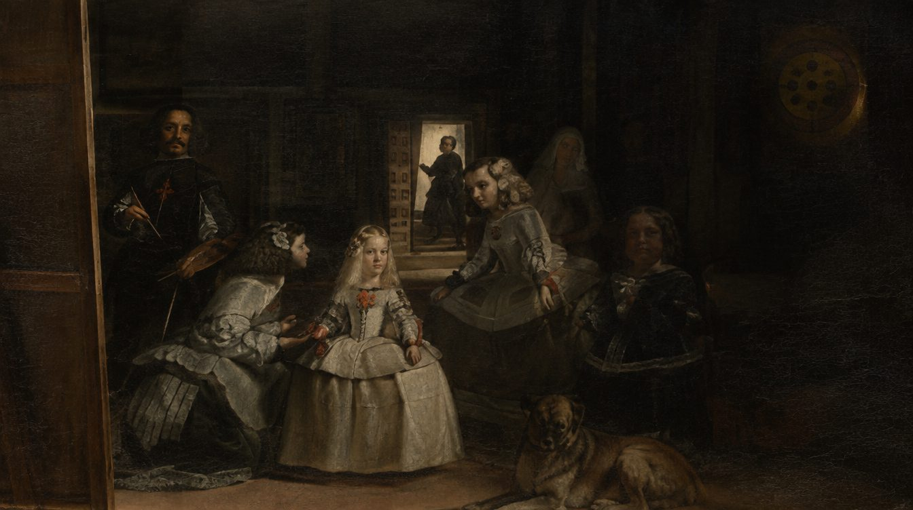
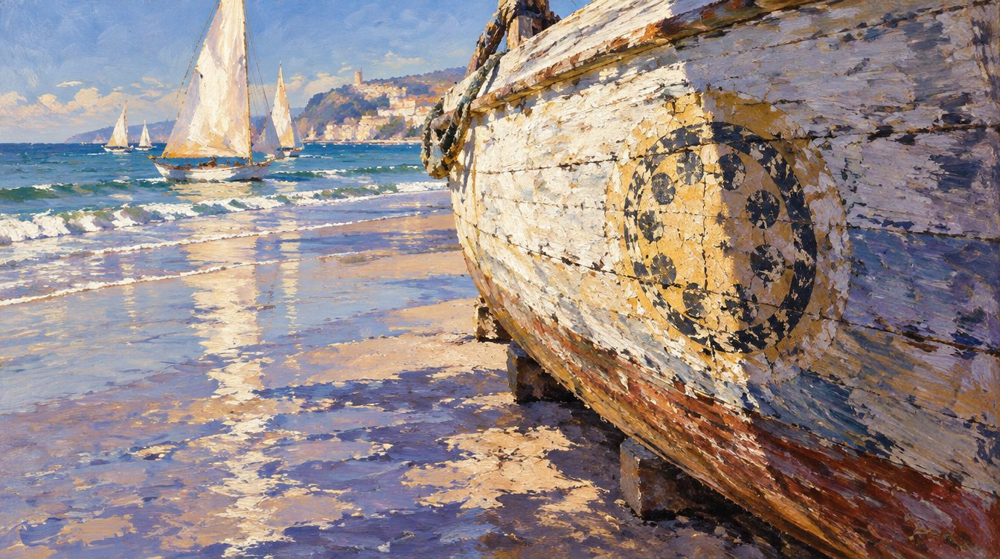
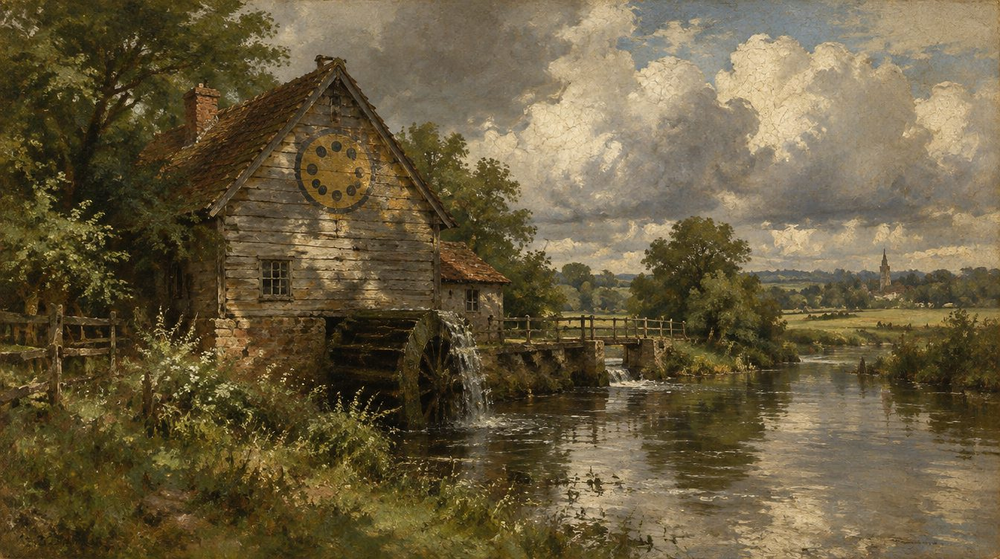

September 2026
The eight pictures on the disk
Eight of the wallpapers that come with Trindle are new pictures made with AI image tools, in the style of painters from the Netherlands, France, England and Spain. They are not copies of anyone's work and they are not those painters' paintings: they are pictures in their manner, made for this desktop.
The Trindle mark is worked quietly into every one of them. A plate on a panelled wall, a sign over a cafe door, a disc on a boat's hull. Some take a second to spot and some take a good while, and none of them spoil the picture.
How to use them
The eight
Each one nods to a painter without pretending to be them.

The cafe at night
Nods to Van Gogh
A lit terrace under a turning sky. The mark hangs over the door.

The harbour at sunrise
Nods to Turner
Low sun burning through the haze. The mark is worn into the mooring post.

The water lilies
Nods to Monet
Willow, mist and pads. The mark lies on the water at the left.
The study
Nods to the Dutch masters of the 1600s, Rembrandt above all
A candle, a globe and an open book. The mark is a plate on the panelling.

The window
Nods to Vermeer
Daylight across a sill, and a woman at the window. The mark is a plate beside her.

The court
Nods to Velázquez
A room of figures and long shadows. The mark is high on the back wall.

The beached boat
Nods to Sorolla
A hull on wet sand, sails out beyond. The mark is a disc on the hull.

The watermill
Nods to the English landscape painters of the 1800s
A mill and a river under big weather. The mark is on the mill wall.
Why paintings at all
A desktop with nothing on it is mostly wallpaper, so it may as well be something worth looking at. These were made for Trindle rather than borrowed, which is also why they can carry the mark.
If you would rather not
Point Settings, Wallpaper at your own folder and you need never see them. They take up a little space on the disk and nothing else.